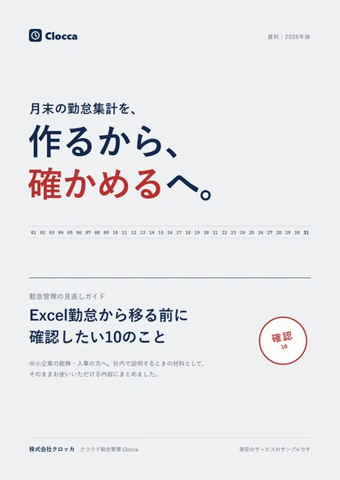

中小企業のクラウド勤怠管理
月末の勤怠集計を、作るから、
確かめるへ。
打刻・残業・有給は、毎日その日のうちにまとまります。月末にするのは、数字を見直して締めること。
初期費用0円・1人あたり月200円から（税抜）
10月分の締め
2026.10.31
確認が必要な項目：2件
| 名前 | 出勤日数 | 実働 | 残業 | 有給の残り | 確認 |
|---|---|---|---|---|---|
| 山田 さくら | 21 | 168:30 | 12:30 | 8.0 | 済 |
| 佐藤 健太 | 21 | 181:15 | 28:15 | 5.0 | 残業 |
| 鈴木 美咲 | 20 | 158:00 | 06:00 | 10.5 | 打刻もれ |
| 高橋 陽介 | 21 | 166:45 | 10:45 | 3.0 | 済 |
Excel・タイムカードとの違い
締めの日を、比べると
同じ月末の作業でも、Excelやタイムカードでは集計表を「作る」ところから始まります。Cloccaでは、毎日まとまった数字を「確かめる」ところから始まります。
打刻の記録
タイムカードを集めて、Excelに打ち直す
毎日の打刻が、その日のうちに集計されている
打刻もれ
空欄を探して、本人に聞いて回る
もれの一覧を見て、本人に修正を頼む
残業
月末に計算して、はじめて基準を超えた人に気づく
月の途中で、基準に近づいた人にお知らせが届いている
有給
台帳の残りの日数を、手で書き換える
残りの日数と、年5日の取得の状況を一覧で見直す
給与計算へ
集計表を見ながら、給与ソフトに入力する
給与ソフトに合わせた形式で書き出して、取り込む
主な機能
毎日、Cloccaが
しておくこと
月末に「確かめる」だけで済むように、毎日の記録と集計はClocca側でまとめておきます。
-
スマホ・PCで打刻
出勤・退勤は、スマホのブラウザやPCから。直行直帰やテレワークの日も、同じひとつの記録になります。ICカードでの打刻にも対応しています。
10月8日（水）
09:00
出勤しました
- 出勤
- 09:00
- 休憩
- --:--
- 退勤
- --:--
-
残業が上限に近づくとお知らせ
会社で決めた基準（たとえば月30時間）に近づくと、本人と上司にお知らせします。月の途中で、仕事の割り振りを見直せます。
残業のお知らせ
佐藤 健太さんの今月の残業が 28:15 になりました。基準の 30:00 に近づいています。
-
有給の残りと、取得の状況
入社日から付与の日数を計算し、残りの日数を一人ずつ記録します。年5日の取得が済んでいない人も、一覧で確かめられます。
-
給与ソフトへのデータ出力
締めた勤怠を、主要な給与計算ソフトに合わせた形式のCSVで書き出せます。プロプランでは、ソフトとの自動連携にも対応しています。

無料の資料
社内で説明するときは、
資料で確かめてください
導入を決めるのが社長や役員の場合も、そのまま渡せる内容にしています。
- Excel勤怠から移る前に確認したい10のこと
- 人数ごとの料金の見積もりの例
- 締めの確認画面・打刻画面の流れ
- 今のExcel・タイムカードのデータの移し方
- 始めるまでの予定の立て方
料金
初期費用0円、
使う人数の分だけ
30日間は、すべての機能を無料でお試しいただけます。試したあとに、自動で有料になることはありません。
| プラン | 1人あたり月額（税抜） | できること |
|---|---|---|
| ライト | 200円 | スマホ・PC・ICカードの打刻、勤怠の自動集計、CSVの書き出し |
| スタンダード | 300円 | ライトのすべて＋残業のお知らせ、有給の付与と取得の管理、シフト管理 |
| プロ | 450円 | スタンダードのすべて＋給与計算ソフトとの自動連携、複数の拠点の一括管理、専任スタッフのサポート |
※価格はすべて税抜です。最低利用料金は月額3,000円です。
始めるまで
資料請求から、
本番の運用まで
資料請求
フォームから。入力は5つの項目です。
30日間の無料トライアル
実際の打刻と締めで、すべての機能を試せます。
初期設定のお手伝い
就業規則に合わせた設定を、担当者がオンラインでお手伝いします。
本番の運用
運用が始まってからも、チャットと電話でご相談いただけます。
サポートとデータの扱い
安心してお使いいただくために
- 通信
- すべての通信を暗号化しています
- バックアップ
- データは毎日、別の場所に自動で保存します
- 保管の場所
- 日本国内のサーバーで管理しています
- サポート
- チャット・電話（平日 9:00〜18:00）
よくある質問
導入の前に、よく聞かれること
無料トライアルのあと、自動で有料になりますか？
いいえ。自動で有料プランに切り替わることはありません。続けて使う場合だけ、お手続きをお願いしています。
何名から使えますか？
1名から使えます。料金は使う人数の分だけで、最低利用料金は月額3,000円（税抜）です。
今のタイムカードやExcelのデータは移せますか？
CSV形式で取り込めます。形式がわからない場合も、サポートの担当者がお手伝いします。
法改正があったときは、どうなりますか？
法改正にあわせて、設定の項目を更新し、お知らせします。自社の就業規則への当てはめ方は、社労士など専門家とご確認ください。
給与計算ソフトと連携できますか？
すべてのプランで、主要な給与計算ソフトに合わせた形式のCSVを書き出せます。プロプランでは自動連携にも対応しています。
資料請求
資料を
無料でダウンロード
「Excel勤怠から移る前に確認したい10のこと」と、料金・画面・始めるまでの流れをまとめた資料をお送りします。